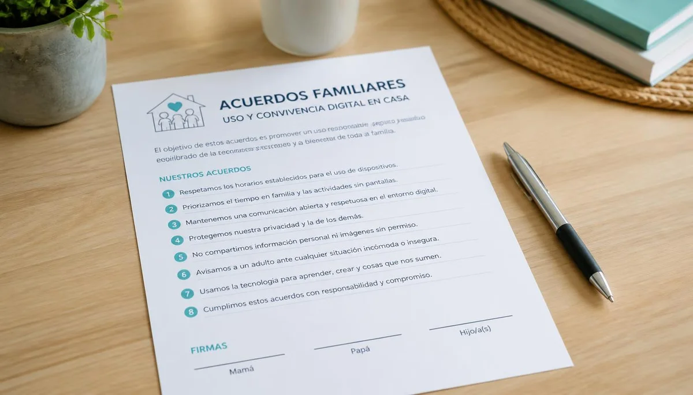

Pactar normas de uso y convivencia digital en casa
Las restricciones impuestas de forma unilateral suelen generar confrontación y resistencia en los menores. Por el contrario, consensuar un marco de normas claras sobre el uso de la tecnología fomenta la responsabilidad individual y fortalece la convivencia armónica en el hogar.
Construir acuerdos de manera conjunta
Invitar a los menores a participar en la definición de los límites tecnológicos —acordando horarios, zonas de exclusión digital y responsabilidades asociadas— les otorga un papel activo. Cuando comprenden el porqué de las normas, se comprometen con mucha más facilidad a cumplirlas.
Flexibilidad y revisión progresiva
A medida que los hijos crecen y demuestran mayor madurez, los acuerdos digitales deben evolucionar para otorgarles cuotas progresivas de autonomía, siempre acompañadas de una supervisión abierta y basada en la confianza mutua.
"Consensuar las normas digitales en familia transforma las imposiciones en un compromiso compartido de bienestar y respeto mutuo."
Un hogar conectado desde el equilibrio
El objetivo final de la convivencia digital no es la desconexión absoluta, sino el aprendizaje de un uso moderado y consciente que permita disfrutar de la tecnología sin descuidar la vida real ni los afectos.
➔ Volver al índice de Uso responsable de pantallas